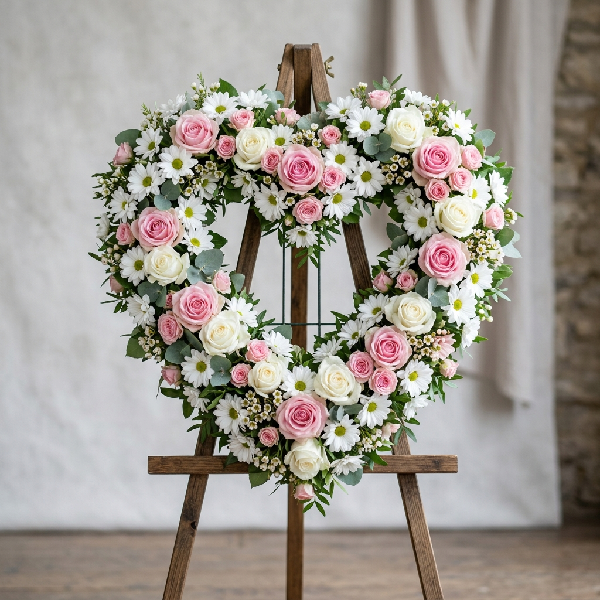

Más VendidoCorona Corazón Waira
Un homenaje de profundo amor y paz, diseñado con una manta compacta de crisantemos blancos que simbolizan la eternidad, coronada por un hermoso arreglo lateral de rosas y follaje. Transmite consuelo íntimo.